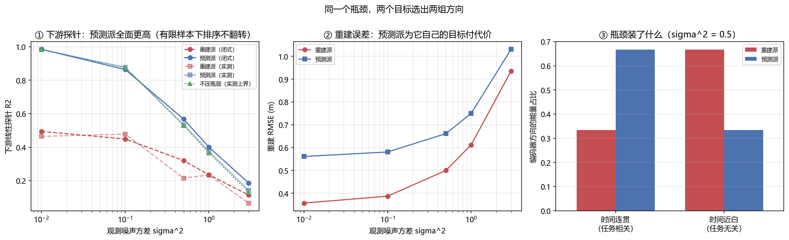

联合嵌入预测与潜空间世界模型：不重建的那条路¶
预计阅读：16 分钟 | 前置知识：自监督学习基础、对比学习思想、序列预测指标、本卷 02/03 篇
1. 重建派与预测派的分岔¶
前面几篇讲的世界模型有一个共同点：它们都重建观测。生成式世界模型（02 篇）在像素空间生成下一帧；Dreamer 系列（03 篇）先从观测编码出潜状态，再用解码器把潜状态还原成观测，重建损失是训练的主信号。3D 场景世界模型（04 篇）更直接，重建就是它的输出。
这条路很成功，但它有一个默认前提：把观测还原得越准，就代表理解得越好。这个前提值得质疑。一段无人机视频里，像素级最不可预测的部分往往是最无关的部分——树叶的抖动、光照的闪烁、纹理的高频细节。一个模型把大量容量花在这些东西上，还原指标很漂亮，但对「无人机会往哪飞」毫无增益。
联合嵌入预测架构（Joint-Embedding Predictive Architecture，JEPA）提出的替代方案是：不在观测空间预测，而在表征空间预测。给编码器两个时刻的观测，得到两个表征；让预测器从 t 时刻的表征推出 t+1 时刻的表征，损失只作用于表征之间，完全不经过解码器。
graph TB
subgraph 重建派
A[观测 x_t] --> B[编码器]
B --> C[潜状态 z_t]
C --> D[解码器]
D --> E[重建 x_t]
end
subgraph 预测派
F[观测 x_t] --> G[编码器]
G --> H[表征 s_t]
H --> I[预测器]
I --> J[预测表征 s_t+1]
K[观测 x_t+1] --> L[目标编码器]
L --> M[目标表征 s_t+1]
J -.表征空间损失.-> M
end两条路的差别不在「有没有解码器」这一件事上，而在判据换了：重建派问「潜状态里有多少关于观测的信息」，预测派问「潜状态里有多少关于未来的信息」。这两个问题是不同的。
2. 表征空间预测：核心主张与它挡住的噪声¶
JEPA 的原始构想来自 2301.08243 Self-Supervised Learning from Images with a Joint-Embedding Predictive Architecture（I-JEPA，2023-01），视频版本是 2404.08471 Revisiting Feature Prediction for Learning Visual Representations from Video，规模化的后续是 2506.09985 V-JEPA 2（2025-06）。
核心主张可以写成一句话：没被预测的细节就是不需要被预测的细节。因为损失不经过解码器，编码器没有动机去保留那些「无法从过去推出、也不影响未来」的信息。噪声类细节天然被过滤掉，模型容量被逼到真正可预测的那部分结构上。
这在自监督学习里有一个很实在的收益：重建目标的「最短路径」是一条捷径。要让解码器还原每一片树叶，最省事的做法是把整张图的信息都塞进潜状态；模型学的是压缩，不是理解。JEPA 把这条捷径堵住了——预测器没法从过去推出随机的树叶位置，损失会惩罚它去尝试，于是编码器学会不编码这些。
但挡住噪声这件事是双刃的。挡住的是「不可预测且不重要」的信息，可判据里没有「重要」这一项，只有「可预测」。于是重要但难预测的量也会被丢掉。2610.04585 Frozen in a Frame: The Velocity Blind Spot in JEPA World Models 找到的就是这一类：在两帧之间移动幅度很小时，JEPA 类模型的潜表征几乎不变化——速度没有被编码进去。速度恰恰是无人机最需要的量，它难预测（需要至少两帧差分），但它对任务至关重要。
3. 丢掉重建挡住了什么¶
第 2 节的收益之外，放弃重建还带来三个具体的代价。
第一，少了一个免费的辅助监督信号。重建损失给编码器提供了一个稠密的梯度来源，它对每个像素都有意见。丢掉它以后，剩下的只有「表征与目标表征一致」这一条，而这个信号有个退化解：编码器把所有输入映射到同一个点。这时预测误差恒为 0，损失完美，但表征毫无信息。这就是表征塌缩（representation collapse），第 6 节专门讲怎么防。
第二，物理量无处可查。重建派可以拿解码结果去对物理量——位置、速度、加速度能不能从潜状态线性读出，用探针一测就知道。预测派的潜空间通常不能还原成任何可读的观测，于是「模型有没有理解动力学」这个问题只剩间接证据。本卷 07 篇讲的 2610.03632（World Embedding Benchmark）与 2610.03154（在激活里定位物理量）正是为补这个缺口出现的——评测被迫下沉到表征层。
第三，调试与可视化变难。重建派出错时你能看见「预测的画面不对」；预测派出错时你只看到损失不再下降，而原因可能在任何一环。这一条工程代价常被低估。
判据：选择重建还是预测，取决于下游任务吃什么。下游用图像（生成、渲染、视觉伺服）→ 需要重建，因为输出必须回到像素空间。下游用特征（规划、控制、检索）→ 可以省掉重建，但必须补上别的信息保全机制（辅助任务、正则、探针监督），否则丢了什么你不知道。
4. 三种用途¶
JEPA 类模型在机器人领域目前有三种用法，混用是常见的误读来源。
（1）当世界模型用，在潜空间里做规划。这是最直接的一种：有了编码器和预测器，就能在潜空间里 rollout 一串候选动作序列，用预测表征与目标表征的距离打分，选最好的那条执行。2610.10515 RoboJEPA 走的就是把这条路线规模化的方向。这条路的关键约束是潜空间里的距离必须有意义——预测表征与目标表征的欧氏距离大，必须真的代表任务上差得远。这个前提不成立时，规划器会在潜空间里选出一条「数字上很近、实际做不到」的轨迹。2610.03137 Keeping JEPA World Models Plannable When Little of the Frame Moves 处理的就是这个前提失效的情形：画面几乎不动时，潜表征的变化不足以支撑搜索。
（2）当表征预训练用，冻结后接下游策略头。这是目前工程上最稳的一种用法：编码器只负责把观测变成特征，规划或控制完全交给别的模块。好处是训练与部署解耦、可控性强；代价是编码器看不到下游任务，学到的表征不一定对齐任务。2606.20104 Sensorimotor World Models 提出用逆动力学做辅助目标来缓解这一点：不但要能从 s_t 预测 s_{t+1}，还要能从 (s_t, s_{t+1}) 反推出动作 a_t。加了这个约束，表征必须保留「动作能改变什么」这层信息，光是压缩观测不够。2610.07540 Preserving Unstable Modes Through Inverse Dynamics in JEPA World Models 沿着这条线走得更远——它指出逆动力学还能把不稳定模态保住。
（3）当 RL 的辅助损失，与重建或回报联合训练。2610.02922 TwinJEPA 用双路预测偏好来构造面向目标的表征。这条路线的动机是：世界模型的表征如果能直接编码「离目标还有多远」，控制问题会简单很多。2610.06805 H-JEPA 加的是层次结构——不同时间尺度上各有一个预测器，对应从「下一步怎么动」到「这一段往哪去」的不同抽象层级。2609.33563 MA-JEPA 处理多智能体场景，此时「未来」不只是自己的未来，还包括别人的反应。
三种用途对表征的要求不完全一致：规划要求潜空间距离与任务代价对齐，控制要求表征含动作敏感信息，RL 要求表征含回报信息。一个只在重建上评测过的 JEPA 模型，不能直接搬到这三种用途里的任何一种。
5. 与 RSSM 类世界模型的关系¶
Dreamer 系列（03 篇）用的循环状态空间模型（RSSM）与 JEPA 常被拿来对比，但它们的差别不止「重建 vs 不重建」：
| 维度 | RSSM（Dreamer 类） | JEPA 类 |
|---|---|---|
| 潜状态结构 | 确定性路径 + 随机路径，显式建模不确定性 | 通常只有确定性表征 |
| 时间推进 | 循环，逐步递推 | 预测器可直接跳步（预测 t+k 的表征） |
| 训练信号 | 重建 + 回报 + KL | 表征一致性（+ 正则 / 辅助任务） |
| 想象 rollout | 在潜空间里带随机性 rollout，可采样多条 | 多为确定性单条预测 |
| 与策略的关系 | 世界模型与策略联合训练 | 常先独立预训练，再冻结或微调 |
两个要点值得单独提：
不确定性。无人机在遮挡下必须表达「我不确定目标在哪」。RSSM 的随机路径天然给出一个分布，能采样出多条可能的未来；确定性的 JEPA 表征只有一个点。2610.07599 Modeling Latent Disturbances for Robust Decision-Making in World Models 处理的正是这件事——显式建模潜扰动，让确定性架构也能表达不确定性。这不是谁优谁劣，而是用途决定的：要强化学习需要探索、要做风险敏感规划，就需要分布。
时间抽象。RSSM 逐步递推，步长由采样率决定；JEPA 的预测器可以一次跳过若干帧。后者对长时程更友好（本卷 09 篇），代价是中间过程不可见——你没法检查「它在第 3 步时以为自己在哪」。
判据：需要不确定性和探索 → RSSM；需要长时程跳步预测和稳定表征 → JEPA；两者都要 → 双时程或双潜变量架构（见
09篇）。
6. 表征塌缩与信息瓶颈¶
第 3 节提到的塌缩是这条路线的核心风险。一个没有约束的表征预测目标有平凡的全局最优：编码器输出常数。此时预测误差恒为 0，损失完美，表征零信息。这不是训练不充分，是目标函数本身的退化解。
工程上有三类对抗手段：
- 非对称结构：目标表征由一个不接梯度的编码器（通常是主编码器的指数移动平均）产生，主编码器只被单向拉动。这打破了「两边一起塌到同一点」的对称性。
- 方差-协方差正则：显式要求表征各维方差不得低于某个阈值、且各维之间不相关，从根上禁止塌缩。
- 结构约束：
2610.03587AVL-JEPA 处理的是因果动力学信息塌缩——不是全塌，而是表征里关于动力学的那部分信息被压没了。它把「动力学信息」单独拎出来做保全。2610.00727CF-JEPA 换一个角度，把表征分解成「可控的」与「不可控的」两部分，只对可控部分做预测——因为不可控部分本来就不该被预测。
塌缩的成因与训练动态直接相关。2610.02344 Drive vs. Decay: On the Training Dynamics of Joint-Embedding Predictive Architectures 就是在拆这件事：哪些因素在把表征「推向」有效（drive），哪些在让它「衰减」（decay）。2610.00368 DeepJEPA 从另一个方向给答案——从内部扩展世界模型，把容量加到预测器与编码器上而不是加到数据上。
瓶颈宽度是另一个独立变量。JEPA 把表征压到一个固定维数的潜空间，压多窄是个设计参数。压得太窄，有用的方向被挤掉；压得太宽，塌缩风险与无用的自由度都上升。第 9 节的实验量的就是这一条：在瓶颈宽度固定的前提下，损失主要来自「丢掉了几个信号方向」，而不是「多装了无用方向」。这个结论把「怎么加宽瓶颈」这类直觉问题换成了一个更准确的问题：你丢掉的是哪几个方向。
能量基模型是这条路线的一个近亲。2406.08862 Cognitively Inspired Energy-Based World Models（2024-06）用能量函数替代显式的预测损失：相容的 (状态, 状态') 对能量低，不相容的能高。它避免了塌缩（常数输出的能量处处相同，无法区分相容与不相容），代价是能量函数的训练本身更麻烦。这条线目前的量级很小——本卷 tools/watch.py 的词表查过，abs:"energy-based" AND abs:"world model" 在 2026 年 6–10 月这个窗口里 0 命中，不限窗口也只有 8 篇。可以写「稀疏」，不能写「没有」，结论与复核证据记在 tools/watchlists.py 的 VERIFIED_ZEROS 里。
7. 对无人机的含义¶
第一，速度必须被显式检查。无人机的控制器是二阶的，吃速度指令。2610.04585 的速度盲点在无人机上不是学术问题：一个位置预测完美、速度没编码进去的世界模型，喂给控制器会抖。检查方法很便宜——构造一对「位置相同、速度不同」的状态，看潜表征有没有分开。没分开就是盲的，加再多的数据也修不好，要改辅助任务（逆动力学是最直接的一种，见 2606.20104）。
第二，先定下游再选架构。本卷 05 篇讨论过无人机的几条技术路线。把第 4 节的三种用途对上去：
- 用世界模型做在线规划（MPPI、CEM 在潜空间里搜）→ 需要潜空间距离与任务代价对齐，
2610.03137那条约束是硬约束不是优化项； - 用世界模型做表征预训练给下游策略 → 冻结编码器，加逆动力学辅助任务，评测用线性探针；
- 用世界模型做RL 的想象环境 → 需要不确定性，这时候 RSSM 那一路更合适，或者参考
2610.07599的潜扰动建模。
第三，别把「重建差」当成缺点。第 9 节的实验会给出一个看起来不太好看的数字：预测派的 RMSE 比重建派差 1.1–1.57 倍。这在它的目标函数下是必然的——预测派压根没有为重建优化过。评估一个 JEPA 模型的重建误差，跟你评估一条鱼的爬树能力一样没有信息量。要评它，就用探针（表征里有没有任务信息）或闭环任务成功率。
第四，本卷 Demo U 是线性-高斯最小模型，结论有明确的外推边界。下面第 9 节会把边界写在结论旁边，不单独挪走。真实 JEPA 的编码器是非线性的，塌缩靠正则而非高斯噪声，时间连贯性也不会像最小模型里那样恰好分成两组常数。本节量的两个目标函数的分歧，不是某个真实 JEPA 的性能。
8. 关键论文¶
本节收 2026 年 6–10 月窗口内的 JEPA 与新架构新作，另加两篇路线来源；逐条 arXiv 号已通过 arXiv API 核对标题。
路线来源¶
-
[arXiv'23.01] I-JEPA — Self-Supervised Learning from Images with a Joint-Embedding Predictive Architecture
 表征空间预测的原始构想。
表征空间预测的原始构想。 -
[arXiv'25.06] V-JEPA 2 — Self-Supervised Video Models Enable Understanding, Prediction and Planning
 视频版本规模化，并把表征接到规划上。
视频版本规模化，并把表征接到规划上。
规模化与新架构¶
-
[arXiv'26.09] DeepJEPA — Scaling World Models from Within
 把容量加在模型内部而非数据上。
把容量加在模型内部而非数据上。 -
[arXiv'26.10] RoboJEPA — Scaling Robotic Latent World Models
 潜空间世界模型在机器人域的规模化。
潜空间世界模型在机器人域的规模化。 -
[arXiv'26.10] H-JEPA — End-to-End Learning of Hierarchical World Models for Visual Planning
 多时间尺度的层次化预测器。
多时间尺度的层次化预测器。 -
[arXiv'26.09] MA-JEPA — Joint-Embedding World Models for Multi-Agent Reinforcement Learning
 把「别人的未来」也纳入预测目标。
把「别人的未来」也纳入预测目标。
塌缩、动力学信息与训练动态¶
-
[arXiv'26.10] AVL-JEPA — Preventing Causal Dynamics Information Collapse in Joint Embedding Predictive Architecture World Models
 不是全塌，而是动力学信息被压没。
不是全塌，而是动力学信息被压没。 -
[arXiv'26.09] CF-JEPA — Improving Robustness of JEPA World Models via Controllability Factorization
 只预测可控部分，不可控部分不预测。
只预测可控部分，不可控部分不预测。 -
[arXiv'26.10] Drive vs. Decay — On the Training Dynamics of Joint-Embedding Predictive Architectures
 拆解训练中推动与衰减两股力量。
拆解训练中推动与衰减两股力量。 -
[arXiv'26.10] DSReg — Provably Recovering Individual World Latents without Reconstruction
 不重建也能可证明地恢复个体潜变量。
不重建也能可证明地恢复个体潜变量。
逆动力学与物理量保全¶
-
[arXiv'26.06] Sensorimotor World Models — Perception for Action via Inverse Dynamics
 用逆动力学做辅助目标，逼表征保留动作敏感信息。
用逆动力学做辅助目标，逼表征保留动作敏感信息。 -
[arXiv'26.10] Preserving Unstable Modes Through Inverse Dynamics in JEPA World Models
 逆动力学还能把不稳定模态保住。
逆动力学还能把不稳定模态保住。 -
[arXiv'26.10] Frozen in a Frame — The Velocity Blind Spot in JEPA World Models
 帧间运动小则潜表征不变，速度进不去。
帧间运动小则潜表征不变，速度进不去。
连续时间与流匹配¶
-
[arXiv'26.07] ODEWorld — A Continuous Predictive Architecture via Physical-Time Flow
 用物理时间连续流替代离散步预测。
用物理时间连续流替代离散步预测。 -
[arXiv'26.08] Flow-JEPA — Robust Latent Dynamics for JEPA World Models via Flow Matching
 流匹配给潜动力学。
流匹配给潜动力学。
规划与不确定性¶
-
[arXiv'26.10] Keeping JEPA World Models Plannable When Little of the Frame Moves
 画面几乎不动时潜表征变化不足以支撑搜索。
画面几乎不动时潜表征变化不足以支撑搜索。 -
[arXiv'26.10] TwinJEPA — Action-Preferred Predictive Representations for Goal-Conditioned Control
 双路预测构造面向目标的偏好表征。
双路预测构造面向目标的偏好表征。 -
[arXiv'26.10] Modeling Latent Disturbances for Robust Decision-Making in World Models
 给确定性架构补上不确定性表达。
给确定性架构补上不确定性表达。 -
[arXiv'24.06] Cognitively Inspired Energy-Based World Models
 能量基的近亲路线；这一线稀疏，证据见
能量基的近亲路线；这一线稀疏，证据见 tools/watchlists.py的VERIFIED_ZEROS。
9. 动手验证：重建式表征与预测式表征的分歧¶
这一节把第 1 节那个抽象的「判据换了」跑成数字。装置刻意做得极小：线性-高斯最小模型，两个编码器都有闭式解，不训练任何模型。
潜空间 8 维，分成两组，各 4 维：
| 组 | 方差 | 自相关 a | 含义 |
|---|---|---|---|
| 连贯组 | [1.0, 0.8, 0.6, 0.4] | [0.95, 0.93, 0.91, 0.89] | 时间上连贯、可预测，下游任务关心它 |
| 无关组 | [2.0, 1.7, 1.4, 1.1] | [0.30, 0.27, 0.24, 0.21] | 方差大但几乎不可预测，下游任务不关心 |
每组内部四维的方差与自相关各不相同——这一点是必须的，原因见本节末尾的注。观测 = 随机正交基下的潜状态加高斯噪声（build_world() 从 np.linalg.qr 取固定正交阵 R）。两个编码器共用 6 维瓶颈：
- 重建派：取观测协方差
Sig_x = R·diag(lam + sigma^2)·R^T的前 6 个特征向量（按方差排序）。 - 预测派：取
M = D^{-1/2}·C·D^{-1/2}的前 6 个特征向量，其中C = diag(a·lam)，再按D^{1/2}映射回原空间。这个判据来自最大化(wᵀCw)² / (wᵀDw)²——即预测能力与方差之比，不是方差本身。
任务标签 y = c·s，c 只在连贯组上非零、组内按 1/√var 加权，使得 var(y) = 1.0000（四维等贡献）。下游用一个线性 ridge 探针（RIDGE_ALPHA = 1e-3），训练 150 样本，200 次随机划分取均值。
9.1 核心代码¶
import numpy as np
SEED = 11
D, N_COH, N_NUI, RANK = 8, 4, 4, 6 # 潜维数 / 两组各几维 / 瓶颈宽度
LAM_COH, A_COH = [1.00, 0.80, 0.60, 0.40], [0.95, 0.93, 0.91, 0.89]
LAM_NUI, A_NUI = [2.00, 1.70, 1.40, 1.10], [0.30, 0.27, 0.24, 0.21]
SIGMA2 = [0.01, 0.1, 0.5, 1.0, 3.0]
N_TRAIN, N_TEST, N_SPLIT = 150, 4000, 200
RIDGE_ALPHA = 1e-3
def build_world():
rng = np.random.default_rng(SEED)
Q, _ = np.linalg.qr(rng.normal(size=(D, D))) # 固定的随机正交基
lam = np.array(LAM_COH + LAM_NUI)
a = np.array(A_COH + A_NUI)
return Q, a, lam
def encoders(R, a, lam, sigma2):
"""两个编码器都取「前 RANK 个特征向量」，只是判据不同，都有闭式解。"""
Sig_x = R @ np.diag(lam + sigma2) @ R.T
w, V = np.linalg.eigh(Sig_x)
E_recon = V[:, np.argsort(w)[::-1][:RANK]] # 按观测方差排序
C = np.diag(a * lam) # 预测增益
D_cov = np.diag(lam + sigma2)
Dh = np.diag(1.0 / np.sqrt(np.diag(D_cov)))
wm, Vm = np.linalg.eigh(Dh @ C @ Dh) # 判据：预测能力 / 方差
Vp = np.diag(np.sqrt(np.diag(D_cov))) @ Vm
E_pred = Vp[:, np.argsort(wm)[::-1][:RANK]]
E_pred /= np.linalg.norm(E_pred, axis=0, keepdims=True) # 列归一化
return E_recon, E_pred
encoders() 里那两行 Dh/Vp 不是随手写的。做变量替换 w = D^{1/2}v 之后，最大化预测能力与方差之比这个判据就变成 (wᵀMw)² / ‖w‖² 的广义特征问题，特征向量在 w 坐标下取，Vp 那一步是把它映射回潜空间坐标。少了这步映射，得到的基就不对。
9.2 本地实测结果¶
① 两个编码器选中的方向落在哪一组：
sigma^2 重建派 连贯/无关 预测派 连贯/无关
0.010 0.333 0.667 0.667 0.333
0.100 0.333 0.667 0.667 0.333
0.500 0.333 0.667 0.667 0.333
1.000 0.333 0.667 0.667 0.333
3.000 0.333 0.667 0.667 0.333
重建派把 4 个高方差方向全装了进来（那 4 个正好是无关组），连贯组只占 2 个位置；预测派反过来，连贯组占 4 个，无关组只占 2 个。这一栏与 σ² 无关——两个判据的排序都不随噪声改变，噪声只改变码字里信号与噪声的相对比重。
这条数字有个直观解释：重建只看「信息量」，而无关组的方差是 2.0、连贯组只有 1.0，所以重建派优先装无关组。预测看「可预测的信息量」，无关组的自相关只有 0.3，乘上之后落后于连贯组。
② 重建误差：预测派为它自己的目标付出的代价
sigma^2 重建派 RMSE 预测派 RMSE 相对
0.010 0.3571 0.5612 1.572
0.100 0.3873 0.5809 1.500
1.000 0.6124 0.7500 1.225
3.000 0.9354 1.0308 1.102
重建派的 RMSE 恒不高于预测派——它是这个指标下的最优解，预测派压根没为它优化过。噪声越大，两者差距越小：σ² = 0.01 时 1.57 倍，σ² = 3.0 时 1.10 倍。因为噪声占比一高，两边都留不住信号。
③ 下游线性探针：闭式（无限数据）与实测（少样本）
sigma^2 闭式 重建 闭式 预测 实测 重建 实测 预测 实测 全维
0.010 0.4944 0.9842 0.4649 0.9835 0.9832
0.100 0.4495 0.8638 0.4785 0.8769 0.8748
0.500 0.3205 0.5680 0.2157 0.5345 0.5291
1.000 0.2361 0.4013 0.2345 0.3751 0.3662
3.000 0.1151 0.1862 0.0669 0.1432 0.1302
这一栏是本节的主结论所在。
闭式那一栏只反映「码字里有几个信号方向」：预测派 4 个信号方向全在，重建派只有 2 个。所以 σ² = 0.01 时预测派 0.9842、重建派 0.4944，差距接近一倍。
实测与闭式的差值就是有限样本的估计方差，量级是几个百分点，方向不固定——有的档实测反而更高（因为 ridge 收缩本身也能帮上忙）。这一点值得说明：这个最小模型量不出「无用方向额外拖累探针」这条更细的说法。要把那一条量出来，得把训练样本压到与瓶颈宽度同量级，那时测的是估计噪声，不是结论。
最后一行是对照组，也是本节最要紧的一条。「实测 全维」是不压瓶颈、用全部 8 维做探针的读数：0.9832 / 0.8748 / 0.5291 / 0.3662 / 0.1302。把它与「实测 预测」并排看——0.9835 vs 0.9832、0.8769 vs 0.8748、0.5345 vs 0.5291……预测派与上界几乎重合。这说明：在 6 维瓶颈下的损失，主要来自「丢掉了几个信号方向」，而不是「多装了无用方向」。预测派丢掉的那 2 个位置给了无关组，但它们没造成可见的拖累。
所以「怎么加宽瓶颈」这个直觉问题要换一个更准确的问法：你丢掉的是哪几个方向。

外推边界：本实验是线性-高斯最小模型——编码器是线性正交投影，动力学是线性的，噪声是高斯的，两个判据都有闭式解。它量的是两个目标函数的分歧，不是某个真实 JEPA 或某个真实自编码器的性能。已知不能外推的部分：真实 JEPA 的编码器是非线性的；表征塌缩要靠专门的正则项（不是这里的高斯噪声）；真实世界的时间连贯性不会像这里一样恰好分成两组常数。把结论外推到真实模型规模，需要另做实验。
一个必须记住的装置细节：每组内部四维的方差与自相关刻意取成互不相同。如果四维都取相同的 (λ, a)，协方差矩阵会出现四重简并特征值，此时
np.linalg.eigh返回的是简并特征子空间里任意一组正交基——而这组基决定了编码器留下哪个子空间，于是测出来的探针精度由 LAPACK 的实现细节决定，不由模型决定。这个坑在本次实现里真实踩到过一次（同一份代码给出非单调、无规律的结果），改用互不相同的参数后结果才稳定。写这类最小模型时，简并一定要先破掉。
9.3 运行完整脚本¶
完整脚本在 code/u_jepa_probe.py，额外打印 var(y) = 1.0000 的归一化自检，并输出上面那张三面板图。
10. 延伸阅读¶
- 01-世界模型发展史 — 世界模型脉络中预测式路线的位置
- 02-生成式世界模型 — 重建派的极致：像素空间生成
- 03-模型强化学习世界模型 — RSSM 路径，第 5 节对比的另一半
- 04-3D场景世界模型 — 显式几何重建，第三条腿
- 05-无人机世界模型综述 — 无人机场景下的技术路线
- 06-关键数据集与基准 — 训练与评测这些表征用什么数据
- 07-世界模型评测与诊断 — 为什么表征层评测要单列
- 09-长时程世界模型与交互式生成 — 时间抽象与双时程架构
11. 思考题¶
题目 1：为什么重建派优先装高方差方向¶
第 9 节的 ① 节里，重建派把 4 个高方差方向（全部来自无关组）都装进了 6 维瓶颈。这是实现的问题还是必然？如果想让重建派也优先装连贯组，应该改什么？
参考答案
**是实现下的必然。**重建派的目标是最小化重建误差，而线性情况下这个目标的最优解就是把观测协方差矩阵 `Sig_x` 的前 k 个特征向量全留下——**按方差排序，与「可预测」无关**。无关组的方差是 2.0、1.7、1.4、1.1，连贯组只有 1.0、0.8、0.6、0.4，所以前 6 名里无关组占 4 个。代码没写错，目标函数就是这么定的。 想让重建派也优先装连贯组，有几条路，各有代价： 1. **给重建加各维权重**（按任务重要性加权重建损失）→ 这是在把下游信息注入重建目标。可行，但此时它已经不是纯重建派了。 2. **降低无关组在观测里的方差**（预处理阶段归一化）→ 这是在用数据预处理代替算法选择。实际工程里很常见，也很有效，但需要事先知道哪组是哪组——真实数据里往往不知道。 3. **换判据**（改成预测派）→ 那就直接用 JEPA 了。 重要的一点是：**① 节的结果不能理解成「重建派学得差」**。在重建这个任务上它是最优的；问题只是重建这个任务不等于下游任务。这正是第 1 节「判据换了」的实证。题目 2：预测派的重建误差比重建派差，这是缺点吗¶
② 节显示预测派的 RMSE 比重建派差 1.10–1.57 倍。如果部署时你的下游模块需要还原观测（比如要把预测可视化给人看），预测派是不是就不能用了？
参考答案
**不是缺点，但确实是不能直接用的信号。**两件事要分开： **(a) 那个数字本身没有评价意义。**预测派的目标函数里没有重建项，它的编码器在重建指标上天然是次优的，这与「它的编码器学得差」不是一回事。拿一个没有为该指标优化过的模块去比该指标，得到的差值只是「目标函数分歧」的度量——这正是本实验要量的东西。 **(b) 但下游需要观测时，确实要补东西。**三条路： 1. **额外挂一个解码器**。冻结 JEPA 编码器，单独训一个小解码器做可视化。注意：这个解码器精度不代表编码器质量，只说明「潜状态里还剩多少关于观测的信息」。它通常比纯重建派差，因为编码器当初就没保留那些细节。 2. **换架构**。本卷 `09` 篇的双时程/双潜变量架构就是为这种「既要跳步预测、又要过程可见」的需求出现的——一条潜路径管长时程抽象预测，另一条管短期可还原的细节。 3. **接受它做不了这件事，换用途**。如果下游真的要吃像素，重建派（`02` 篇）或显式几何（`04` 篇）本来就更合适。 **判据**：先看下游吃什么（第 3 节的判据），再看评测用什么指标。用错指标评估一个模块，得到的排名是假的——`07` 篇讲的就是这件事的一般形式。题目 3：为什么必须破掉简并¶
第 9 节末尾提到：如果每组四维取相同的 (λ, a)，np.linalg.eigh 返回的简并子空间基底由 LAPACK 实现细节决定，测出来的结果就不可复现。为什么「不可复现」在这里是致命的，而不只是「有点吵」？
参考答案
因为**它把一个模型性质的问题变成了一个数值库实现的问题，而两者的边界完全看不出来**。 具体推演：四维取相同的 (λ, a) 时，观测协方差在那一组内有四重简并特征值。`eigh` 必须返回一组正交基，但简并子空间内的基底**不唯一**，任何正交变换都是合法答案。LAPACK 返回哪一个取决于实现、版本、甚至内存对齐——但对本实验来说，这组基**就是编码器保留的那个子空间**（因为瓶颈宽度 6 < 8，必须选）。于是： - 探针精度的分子（保留了多少信号方向）由这组基决定； - 这批基是任意的，所以结果可以是非单调、无规律的； - **更要紧的是：它会伪装成结论。**跑两次得到两个数，你会以为是随机种子或有限样本的问题，去调 N_TRAIN、加 seed、换 ridge α——全都无效，因为根源不在那里。 破简并的做法是让每组内部各维参数互不相同（本实验的 LAM_COH/A_COH/LAM_NUI/A_NUI 四维各不相同）。这样特征值互异，特征子空间唯一，结果由模型决定。 **衍生判据**：任何用 `eigh`/`svd` 做「选前 k 个方向」的实验，先检查有没有重根。有重根就必须先破掉，或者明说「这里的结果依赖于数值库的任意选择」——后者在写结论时基本等于没结论。下一节：09-长时程世界模型与交互式生成 — horizon 拉长到上百步之后才显形的三种失效。